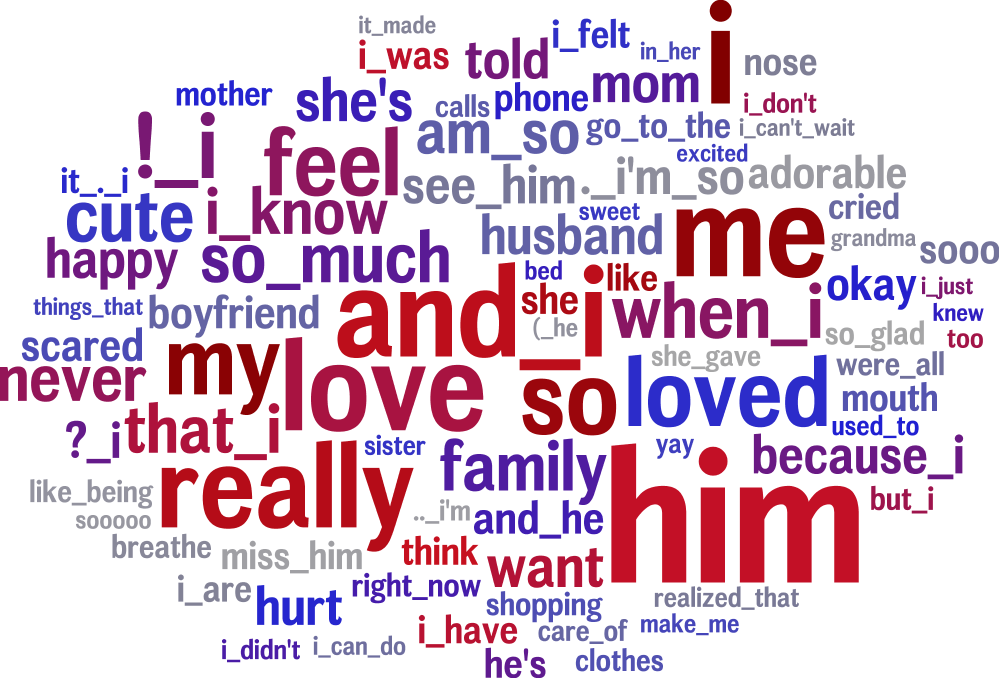

Differential Language Analysis (DLA) Tutorial
In Differential Language Analysis (DLA) we correlate patterns in language with other characteristics such as gender, or voting results. We may look at text broken down by user, county or individual message among other things. You can see more about the conceptual aspect of DLA in this Youtube Video and in this journal paper, Toward Personality Insights from Language Exploration in Social Media.
In this tutorial we will walk you through the process of running DLA using the dlatkInterface.py interface tool. Before running DLA here are some questions to ask yourself:
- What text am I using?
twitter, facebook, blogs
- What relationships am I looking at?
LIWC category prevalence VS voting habits
Usage of the word “I” VS narcissism score on personality quiz
What words correlate with extraversion score on a personality quiz
- How will I group my data?
by message, by user, by country, by hour
Answers for this tutorial:
We will be using text from blogs (a subset of data from this corpus).
We will look at age and gender and how they correlate with n-grams and Facebook topics.
We will group the data at the user level.
Difference between mysql and dlatk: You will be using our infrastructure code (which is primarily written in Python) and MySQL. If you are new to using a terminal this can be confusing. You will start every command with dlatkInterface.py. As the name suggests, this is an interface to a much larger set of code called dlatk. The .py tells you that this is a Python file. On the other hand, MySQL is a database management system. You access the MySQL command line interface by typing mysql in your terminal. MySQL commands only work in the MySQL command line interface, just as dlatkInterface only works in the terminal. Anytime you are asked to run a MySQL command you must first type mysql. To exit you simply type exit. You should also note that all MySQL commands end with a semicolon. When running this tutorial it might be helpful to have two terminal windows open, one for MySQL and another for dlatk.
STEP 0 - Prepare
The text we will use is the mysql database dla_tutorial and in the table msgs. We will copy it to a new table using the following mysql commands:
Replace xxx with your initials so that your message table name is unique and your results don’t get messed up with anyone else’s results!!
USE dla_tutorial;
CREATE TABLE msgs_xxx LIKE msgs;
INSERT INTO msgs_xxx SELECT * FROM msgs;
The relationships we will look at are ngram usage versus age and gender. We will also look at Facebook topics versus age and gender. This outcome data is stored in the table dla_tutorial.blog_outcomes in the columns age and gender.
We will group our data by user. You can see both the message table and the outcome table have a column called user_id.
STEP 1 - Feature Extraction
Generate 1 to 3-gram Features
This step generates a quantitative summary of a body of text. It basically does word/n-gram counts on a group by group basis. It also normalizes by group, so at the end of this you can answer questions like “what proportion of words used by USER 234459 were the word ‘the’”.
##EXPECTED OUTPUT TABLES
#feat$1gram$msgs_xxx$user_id
#feat$2gram$msgs_xxx$user_id
#feat$3gram$msgs_xxx$user_id
#feat$1to3gram$msgs_xxx$user_id
dlatkInterface.py -d dla_tutorial -t msgs_xxx -g user_id --add_ngrams -n 1 2 3 --combine_feat_tables 1to3gram
The above command will produce four tables: one for each 'n' and then a table which combines everything (the 1gram, 2gram and 3gram tables). Next we will remove rare features from the combined table using the following:
##EXPECTED OUTPUT TABLES
#feat$1to3gram$msgs_xxx$user_id$0_05
dlatkInterface.py -d dla_tutorial -t msgs_xxx -g user_id -f 'feat$1to3gram$msgs_xxx$user_id' --feat_occ_filter --set_p_occ 0.05 --group_freq_thresh 500
This command removes any feature used by less than 5% of groups. Note that we are using the --group_freq_thresh flag as well which says we are only looking at groups with at least 500 words.
Brief descriptions of the flags:
-d: the database we are using
-t: the table inside the database where our text lives
-g: the table column we will be grouping the text by
--add_ngrams: the flag which starts the ngram extraction process
../fwinterface/fwflag_n: the value or values for n in ngrams
--feat_occ_filter: This tells us to ignore features which occur in a small percentage of groups
--set_p_occ: The percentage value for the feature occurrence filter
--group_freq_thresh: Ignore groups which do not contain a certain number of words
To view the columns in your feature table use the following mysql command:
describe feat$1gram$msgs_xxx$user_id;
This will give you the following output
+------------+---------------------+------+-----+---------+----------------+
| Field | Type | Null | Key | Default | Extra |
+------------+---------------------+------+-----+---------+----------------+
| id | bigint(16) unsigned | NO | PRI | NULL | auto_increment |
| group_id | varchar(45) | YES | MUL | NULL | |
| feat | varchar(28) | YES | MUL | NULL | |
| value | int(11) | YES | | NULL | |
| group_norm | double | YES | | NULL | |
+------------+---------------------+------+-----+---------+----------------+
Summary of the columns:
id: numeric value of a sql table row
group_id: user ids from your message table
feat: the 1grams
value: the number of times the 1gram occurred within the group
group_norm: the value divided by the total number of features for this group
To view the features tables use the following command in mysql. This will show every column value in the first 10 rows.
mysql> select * from dla_tutorial.feat$1to3gram$msgs_xxx$user_id limit 10;
+----+----------------------------------+-----------+-------+----------------------+
| id | group_id | feat | value | group_norm |
+----+----------------------------------+-----------+-------+----------------------+
| 1 | 003ae43fae340174a67ffbcf19da1549 | neighbors | 1 | 0.000260010400416017 |
| 2 | 003ae43fae340174a67ffbcf19da1549 | all | 15 | 0.00390015600624025 |
| 3 | 003ae43fae340174a67ffbcf19da1549 | jason | 1 | 0.000260010400416017 |
| 4 | 003ae43fae340174a67ffbcf19da1549 | <newline> | 5 | 0.00130005200208008 |
| 5 | 003ae43fae340174a67ffbcf19da1549 | caused | 1 | 0.000260010400416017 |
| 6 | 003ae43fae340174a67ffbcf19da1549 | beware | 1 | 0.000260010400416017 |
| 7 | 003ae43fae340174a67ffbcf19da1549 | bull | 1 | 0.000260010400416017 |
| 8 | 003ae43fae340174a67ffbcf19da1549 | focus | 1 | 0.000260010400416017 |
| 9 | 003ae43fae340174a67ffbcf19da1549 | yellow | 1 | 0.000260010400416017 |
| 10 | 003ae43fae340174a67ffbcf19da1549 | four | 3 | 0.00078003120124805 |
+----+----------------------------------+-----------+-------+----------------------+
You can also compare the sizes of the two tables to see the effect of --feat_occ_filter:
mysql> select count(distinct feat) from dla_tutorial.feat$1to3gram$msgs_xxx$user_id;
+----------------------+
| count(distinct feat) |
+----------------------+
| 65593 |
+----------------------+
mysql> select count(distinct feat) from dla_tutorial.feat$1to3gram$msgs_xxx$user_id$0_05;
+----------------------+
| count(distinct feat) |
+----------------------+
| 1872 |
+----------------------+
What would you expect the count to be if you had used a set_p_occ value of 0.01?
Given the definition of group norm above, what would you expect to get if you summed all of the group norms for a single group? Verify your answer with the following mysql command:
select group_id, sum(group_norm) from dla_tutorial.feat$1gram$msgs_xxx$user_id group by group_id limit 10;
Generate 1to3-gram Features
Now we will generate a 1-3 gram table which will contain all 1grams, 2grams 3grams for each user. This next command will create four tables, one table for each ngram and one combined table containing every table created during the process.
##EXPECTED OUTPUT TABLES
#feat$1gram$msgs_xxx$user_id
#feat$2gram$msgs_xxx$user_id
#feat$3gram$msgs_xxx$user_id
#feat$1to3gram$msgs_xxx$user_id
dlatkInterface.py -d dla_tutorial -t msgs_xxx -g user_id --add_ngrams -n 1 2 3 --combine_feat_tables 1to3gram
The argument to the --combine_feat_tables flag is used to name the combined table. We used 1to3gram which have us the feature table feat$1to3gram$msgs_xxx$user_id.
Generate Lexicon (topic) Features
This step uses the 1gram feature table that was used in step 1a in addition to some topic definitions. It calculates a value that characterizes how strongly each topic was present in the text of a given group. Sometimes this is as simple as aggregating counts. Sometimes there is a weighting factor involved. We will use a weighted, data driven lexicon like our 2000 Facebook topics (topics are distributed with this release). These topics were created from Facebook data using Latent Dirichlet allocation (LDA). Go here for more info on LDA. Also see our DLATK LDA Interface. The Facebook topic table in dlatk_lexica looks like
mysql> select * from dlatk_lexica.met_a30_2000_cp limit 10;
+----+---------+----------+--------------------+
| id | term | category | weight |
+----+---------+----------+--------------------+
| 1 | ce | 344 | 0.000162284972412 |
| 2 | concept | 344 | 0.000556947925369 |
| 3 | cough | 344 | 0.0000711541198235 |
| 4 | bring | 344 | 0.00570741964554 |
| 5 | finest | 344 | 0.000520020800832 |
| 6 | human | 344 | 0.0000762679547477 |
| 7 | winds | 344 | 0.00839234198794 |
| 8 | faster | 344 | 0.000218674830527 |
| 9 | halfway | 344 | 0.000872790748418 |
| 10 | blow | 344 | 0.0120238095238 |
+----+---------+----------+--------------------+
Every lex table will have the columns: id, term, category and (optionally) weight. In an unweighted lexica (for example LIWC (Linguistic Inquiry and Word Count)) the weight column is set to 1 or we can remove the weight column completely.
Since this lexica was produced using a data driven approach we make no attempt to label the categories and give them numerical ids. The Facebook lexica contains weights in the form of conditional probabilities. We now apply this to our message set:
# EXPECTED OUTPUT TABLE
# feat$cat_met_a30_2000_cp_w$msgs_xxx$user_id$1gra
dlatkInterface.py -d dla_tutorial -t msgs_xxx -g user_id --add_lex_table -l met_a30_2000_cp --weighted_lexicon
Brief descriptions of the flags:
Note - dlatk pieces together the expected name of the 1gram table using the information you give it in the -d, -t, and -g options Note - in the table name met_a30_2000_cp, met stands for messages english tokenizen, a30 stands for alpha = 30 (a tuning parameter in the LDA process) and 2000 means there are 2000 topics.
In general use the following syntax (dlatk_lexica is a database where all of our lexica are stored):
## GENERAL SYNTAX FOR CREATING LEXICON FEATURE TABLES
dlatkInterface.py -d <database> -t <message_table> -g <group_column> --add_lex_table -l <topic_tbl_from_dlatk_lexica> [--weighted_lexicon]
Again, you can view the tables with the following mysql commands:
select * from dla_tutorial.feat$cat_met_a30_2000_cp_w$msgs_xxx$user_id$1gra limit 10;
What should the group norms sum to for a single group in the lexicon tables? Will this be the same as above? Why or why not?
select group_id, sum(group_norm) from dla_tutorial.feat$cat_met_a30_2000_cp_w$msgs_xxx$user_id$1gra group by group_id limit 10;
STEP 2 - Insights (DLA): Correlate features with outcomes
Before we take a look at language correlates we first look at our outcomes and their relationships. Here we correlate only the outcomes and output to a correlation matrix in html or csv format.
dlatkInterface.py -d dla_tutorial -t msgs -g user_id \
--correlate --csv --rmatrix --sort --outcome_table blog_outcomes \
--outcomes age gender is_student is_education is_technology \
--outcome_with_outcome_only --output ~/correlations
Brief descriptions of the flags:
--outcome_table: MySQL table where out extra-linquistic data lives
--outcomes: MySQL column names
--outcome_with_outcome_only: says that we are ignoring language and are only looking at the outcomes
--rmatrix: Produces a correlation matrix in HTML format
--csv: Produces a correlation matrix in csv format
--sort: Appends a table to the HTML or csv with correlations sorted by effect size
Output will be written to the file correlations.csv and correlations.html. The csv output should look like
feature,age,p,N,CI_l,CI_u,freq,gender,p,N,CI_l,CI_u,freq,is_education,p,N,CI_l,CI_u,freq,is_student,p,N,CI_l,CI_u,freq,is_technology,p,N,CI_l,CI_u,freq
outcome_age,1.0,0.0,1000,1.0,1.0,1000,0.013089769277,0.679288049345,1000,-0.048943029258,0.0750219732934,1000,0.172756193994,9.62582613937e-08,1000,0.111962191762,0.232261824573,1000,-0.45911352125,6.87199798082e-53,1000,-0.50668539378,-0.408754348795,1000,0.117238226305,0.000337894917181,1000,0.0556496028558,0.177938062241,1000
outcome_gender,0.013089769277,0.679288049345,1000,-0.048943029258,0.0750219732934,1000,1.0,0.0,1000,1.0,1.0,1000,-0.161206890368,4.95925394952e-07,1000,-0.220991447954,-0.100215331046,1000,-0.0221719208099,0.483710711985,1000,-0.0840494768068,0.0398759714239,1000,0.065154589658,0.0492504223304,1000,0.00317432871342,0.126636171693,1000
outcome_is_education,0.172756193994,6.41721742624e-08,1000,0.111962191762,0.232261824573,1000,-0.161206890368,7.43888092428e-07,1000,-0.220991447954,-0.100215331046,1000,1.0,0.0,1000,1.0,1.0,1000,-0.14424303335,7.7633413628e-06,1000,-0.204408282607,-0.0829920718038,1000,-0.0537304778134,0.0894683992084,1000,-0.115339374305,0.00829021870801,1000
outcome_is_student,-0.45911352125,6.87199798082e-53,1000,-0.50668539378,-0.408754348795,1000,-0.0221719208099,0.604638389981,1000,-0.0840494768068,0.0398759714239,1000,-0.14424303335,5.8225060221e-06,1000,-0.204408282607,-0.0829920718038,1000,1.0,0.0,1000,1.0,1.0,1000,-0.141292966419,1.82280081643e-05,1000,-0.20152088984,-0.0800006243256,1000
outcome_is_technology,0.117238226305,0.000253421187886,1000,0.0556496028558,0.177938062241,1000,0.065154589658,0.0656672297739,1000,0.00317432871342,0.126636171693,1000,-0.0537304778134,0.0894683992084,1000,-0.115339374305,0.00829021870801,1000,-0.141292966419,9.11400408216e-06,1000,-0.20152088984,-0.0800006243256,1000,1.0,0.0,1000,1.0,1.0,1000
The --sort will append the following to the bottom of the csv:
SORTED:
rank,age,r,p,N,CI_l,CI_u,freq,gender,r,p,N,CI_l,CI_u,freq,is_education,r,p,N,CI_l,CI_u,freq,is_student,r,p,N,CI_l,CI_u,freq,is_technology,r,p,N,CI_l,CI_u,freq
1,outcome_age,1.0,0.0,1000,1.0,1.0,1000,outcome_gender,1.0,0.0,1000,1.0,1.0,1000,outcome_is_education,1.0,0.0,1000,1.0,1.0,1000,outcome_is_student,1.0,0.0,1000,1.0,1.0,1000,outcome_is_technology,1.0,0.0,1000,1.0,1.0,1000
2,outcome_is_education,0.172756193994,6.41721742624e-08,1000,0.111962191762,0.232261824573,1000,outcome_is_technology,0.065154589658,0.0656672297739,1000,0.00317432871342,0.126636171693,1000,outcome_age,0.172756193994,9.62582613937e-08,1000,0.111962191762,0.232261824573,1000,outcome_gender,-0.0221719208099,0.483710711985,1000,-0.0840494768068,0.0398759714239,1000,outcome_age,0.117238226305,0.000337894917181,1000,0.0556496028558,0.177938062241,1000
3,outcome_is_technology,0.117238226305,0.000253421187886,1000,0.0556496028558,0.177938062241,1000,outcome_age,0.013089769277,0.679288049345,1000,-0.048943029258,0.0750219732934,1000,outcome_is_technology,-0.0537304778134,0.0894683992084,1000,-0.115339374305,0.00829021870801,1000,outcome_is_technology,-0.141292966419,9.11400408216e-06,1000,-0.20152088984,-0.0800006243256,1000,outcome_gender,0.065154589658,0.0492504223304,1000,0.00317432871342,0.126636171693,1000
4,outcome_gender,0.013089769277,0.679288049345,1000,-0.048943029258,0.0750219732934,1000,outcome_is_student,-0.0221719208099,0.604638389981,1000,-0.0840494768068,0.0398759714239,1000,outcome_is_student,-0.14424303335,5.8225060221e-06,1000,-0.204408282607,-0.0829920718038,1000,outcome_is_education,-0.14424303335,7.7633413628e-06,1000,-0.204408282607,-0.0829920718038,1000,outcome_is_education,-0.0537304778134,0.0894683992084,1000,-0.115339374305,0.00829021870801,1000
5,outcome_is_student,-0.45911352125,6.87199798082e-53,1000,-0.50668539378,-0.408754348795,1000,outcome_is_education,-0.161206890368,7.43888092428e-07,1000,-0.220991447954,-0.100215331046,1000,outcome_gender,-0.161206890368,4.95925394952e-07,1000,-0.220991447954,-0.100215331046,1000,outcome_age,-0.45911352125,6.87199798082e-53,1000,-0.50668539378,-0.408754348795,1000,outcome_is_student,-0.141292966419,1.82280081643e-05,1000,-0.20152088984,-0.0800006243256,1000
rank,age,r,p,N,CI_l,CI_u,freq,gender,r,p,N,CI_l,CI_u,freq,is_education,r,p,N,CI_l,CI_u,freq,is_student,r,p,N,CI_l,CI_u,freq,is_technology,r,p,N,CI_l,CI_u,freq
The HTML file should look like this when opened in a browser: Attach:rmatrix_output.png
In this example, positive value for age correlates with older age, and negative correlates with younger. Similarly, a positive value for gender indicates correlation with female, and a negative value correlates with male.
Next we look at language correlates and begin with 1to3grams:
dlatkInterface.py -d dla_tutorial -t msgs_xxx -g user_id \
-f 'feat$1to3gram$msgs_xxx$user_id$0_05' \
--outcome_table blog_outcomes --group_freq_thresh 500 \
--outcomes age gender --output_name xxx_output \
--tagcloud --make_wordclouds
Outcome |
Positive Correlation |
Negative Correlation |
|---|---|---|
Gender |
 |
|
Age |
Finally using the Facebook topics and creating topic tag clouds:
dlatkInterface.py -d dla_tutorial -t msgs_xxx -g user_id \
-f 'feat$cat_met_a30_2000_cp_w$msgs_xxx$user_id$1gra' \
--outcome_table blog_outcomes --group_freq_thresh 500 \
--outcomes age gender --output_name fbtopic_output \
--topic_tagcloud --make_topic_wordcloud --topic_lexicon met_a30_2000_freq_t50ll \
--tagcloud_colorscheme bluered
Brief descriptions of the flags:
../fwinterface/fwflag_make_topic_wordcloud:
The following line will be printed to the screen:
Yielding norms with zeros (1000 groups * 2000 feats).
This tells us that we have 1000 users (since our -g field is user_id) each with 2000 features. The 2000 features comes from the fact that we are working with 2000 Facebook topics. Looking in MySQL we see that we have 500 users total in our dataset:
mysql> select count(distinct user_id) from msgs_xxx;
+-------------------------+
| count(distinct user_id) |
+-------------------------+
| 1000 |
+-------------------------+
This means that every user in our dataset passes the group frequency threshold, i.e., each user has at least 500 words. If we were to set the group frequency threshold to 5000 we would see:
Yielding norms with zeros (125 groups * 2000 feats).
Output will be written to the file fbtopic_output_topic_tagcloud.txt. The topic tagcloud output will be in a directory called fbtopic_output_topic_tagcloud_wordclouds
Outcome |
Positive Correlation |
Negative Correlation |
|---|---|---|
Gender |
||
Age |
Continuing on...
More information about dlatk's interface can be found in the following places: